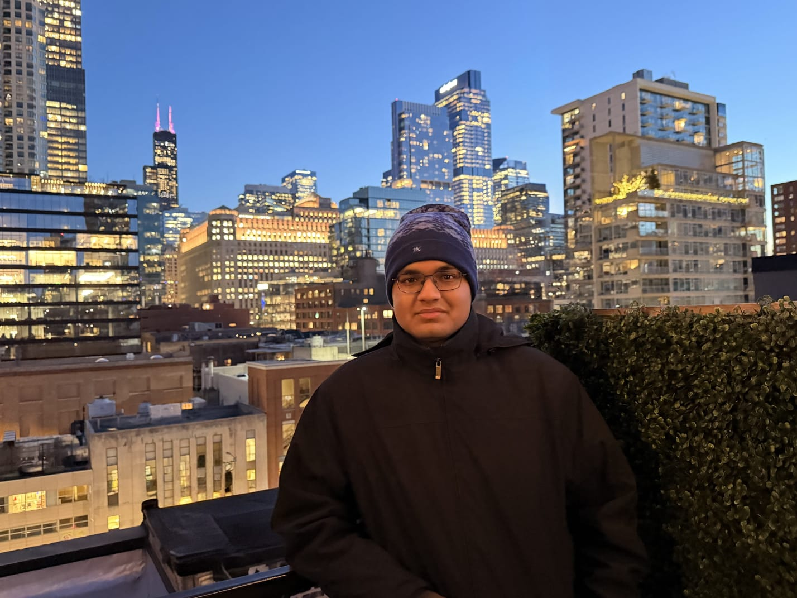
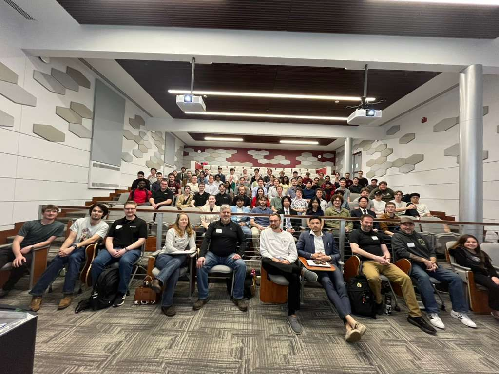
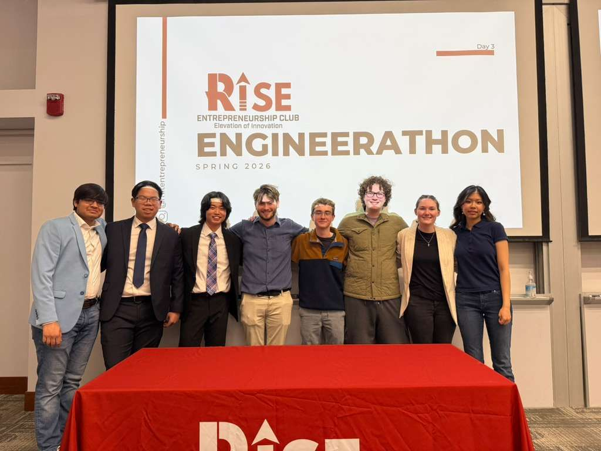

CS @ Rose-Hulman · Class of 2029
Curious by default.
Builder by instinct.
I’m Medhansh, a computer science student who likes getting to the bottom of things, then building something useful with what I find.
From Mumbai. Currently figuring things out in Indiana.

Useful to people.
Interesting under the hood.
From tools used daily by project managers to the data structures behind a text editor, I’m drawn to work where the details make a difference.
See what I mean ↓01 / Projects
A few things I’ve built.
Five-Stage Pipelined
RISC-V Processor
A collaborative processor implementation, progressing from single-cycle execution toward a five-stage pipeline. Dependencies, hazards, and the waveforms that help explain them.
Explore the projectPlanning & Analytics Dashboard
A planning and analytics dashboard used daily by project managers to track work across the organization.
Full stack / In progressRHIT Schedule Builder
An ongoing team project to make course discovery and schedule planning easier for Rose-Hulman students.
02 / The person behind the code
The “how does this
actually work?”
kind of person.
Before it was code, it was Hot Wheels and Lego.
I grew up in Mumbai, splitting time between soccer, cricket, and taking things apart to see what was going on inside. That instinct eventually found its way into computer science and math.
At Rose-Hulman, I’m studying CS with a minor in ECE. I also help students work through Java, object-oriented design, and core CS and math as a teaching assistant and tutor. Explaining an idea is a pretty good way to find out whether you understand it.
I'm interested in both the software people use and the systems underneath it: full-stack applications, processor datapaths, and low-level programming. I'm also beginning to explore embedded systems with an ESP32.
Away from a screen, it’s wristwatches and hip-hop. One rewards looking at the mechanism; the other rewards listening a little closer. I like both.
03 / Professional Experience
Building. Teaching.
Still asking questions.
Professional experience ↗
AI & Automation Intern
Nandan GSE · Summer 2026
Teaching Assistant & Tutor
Rose-Hulman Institute of Technology
EIT Audiovisual Assistant
Rose-Hulman Institute of Technology
04 / Leadership & Activities
Ideas into action.
Leadership & activities ↗Vice President · RISE Entrepreneurship Club
Helped organize Engineerathon · March 2026




A conversation is a good place to start.
Working on something
worth figuring out?
I’d love to hear about it. Let’s talk software,
interesting problems, or what you’re building.